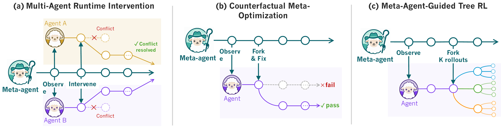
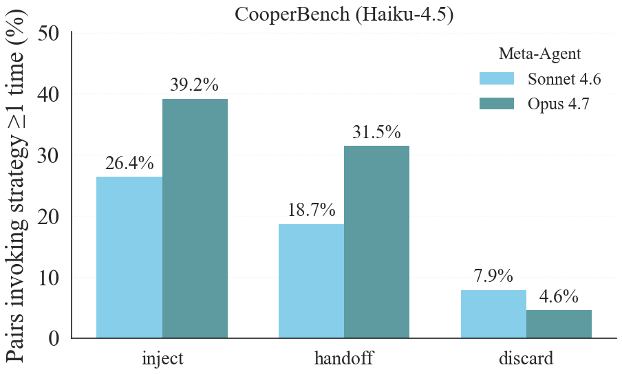
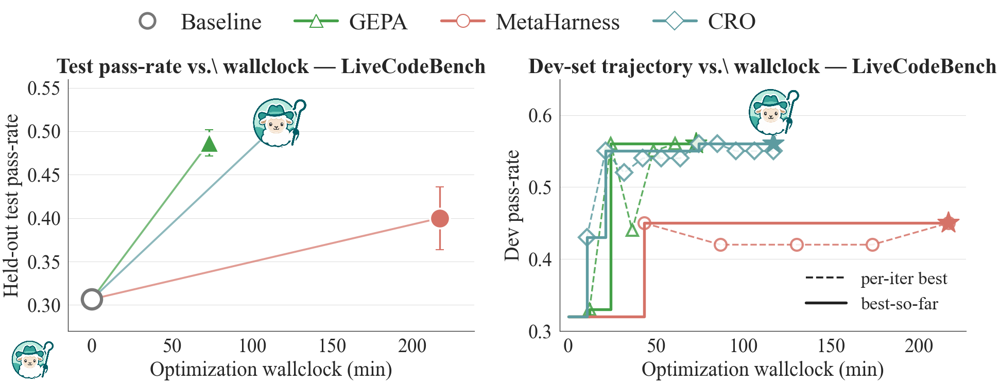

Shepherd: A Runtime Substrate Empowering Meta-Agents with a Formalized Execution Trace
1Northeastern University · 2Stanford University
June 15, 2026

@agent code expresses it (right); and three meta-agents built on the substrate improve runtime supervision, counterfactual optimization, and tree-RL (bottom).Results at a glance
| Use case | Benchmark | Result |
|---|---|---|
| Runtime supervision | CooperBench, pair pass rate | 28.8% to 54.7%, closing 91% of the coordination gap |
| Counterfactual replay (CRO) | vs GEPA & MetaHarness, 5 benchmarks | best on 4 of 5 at lower wall-clock; LiveCodeBench 51.0 vs 48.7 / 40.0 / 30.7 |
| Meta-agent Tree-GRPO | TerminalBench 2.0 transfer (avg@5) | +5.2 (Qwen3.5-35B-A3B), +3.4 (Nemotron-3-120B) over flat GRPO |
| Systems | fork agent + filesystem | 134 to 143 ms, ~5x faster than docker commit, ~95% KV-cache reuse |
Motivation
What watches the harness? Today, nothing. Your harness can pause, intercept, fork, and roll back your agents, but it's exempt from its own rules, even though it makes your most expensive calls: what to retry, which attempt to keep, when to give up. The exemption exists because agent execution was never data. A run is scattered across transcripts and environment snapshots while the harness sits outside as privileged host code, so you can read the logs after the fact but you can't hold the run and branch it.
Today's runtimes hand you fragments. OpenHands gives you a session's event stream, AgentGit hands the worker Git-like commit tools to checkpoint itself, BranchFS isolates the filesystem. All real and useful, all built for the running agent rather than a meta-agent acting on it. None lets you branch another agent's whole execution, model state and environment and history together, as one object. So every meta-agent reinvents the plumbing, and the actual work, deciding when to step in, ends up frozen in orchestration code.
The idea: agents all the way up
Once code became data, we got compilers, version control, CI. SHEPHERD does the same for agent execution. Every action an agent takes (a model call, a tool call, a file write) becomes a typed, content-addressed commit in a Git-like trace, recorded before it runs. A run becomes forkable and replayable like a Git branch, and once it's data the harness needs no privileged seat: it's just another agent reading and editing that data.
Functional programming has long treated an effectful computation as a value you can hold and rewrite. SHEPHERD does that for agents, through four constructs. What an agent is is a task: a typed function over execution, written with an @agent decorator. What it does are effects: typed records where the intent (the tool call about to be made) is a separate event from the outcome, so a meta-agent can step in between. Where it runs is a scope: an isolated environment that forks its agent and filesystem together in one copy-on-write step. What already happened is the execution trace: a Git-like commit graph where any past state is reachable by hash.
The trace really is Git, not a metaphor: scope.fork() is git checkout -b, scope.merge() is git merge, scope.discard() is git branch -D. And the part that does the work: a meta-agent is just a task whose argument is another task. No privileged loop, no special base class:
from shepherd import agent, observe, revert, fork
@agent(LLM="haiku")
def implement(repo, feature):
"Implement the feature in the repo"
@agent(LLM="opus", tool=[observe, revert, fork])
def oversee(run):
"Watch the worker. If its tests break, revert to an earlier state and retry."
run = implement(repo, "login")
implemented = oversee(run) # the meta-agent manages the agent
oversee subscribes to the effect stream to watch without perturbing, pushes effects in to intercept, checks out an earlier commit to rewind, forks a scope to try an alternative. And since it's just an agent, a third agent can supervise the supervisor by taking oversee's run as its input.1. One honest detail: not every effect can be undone. A filesystem write is reversible, a service write is compensable through a handler you supply, and a model call, payment, or email is irreversible (recorded for audit, not un-sendable).
The formal footing
The constructs map onto familiar building blocks: task = typed function, effect = algebraic effect, scope = region-scoped handler, trace = persistent data structure. The properties that matter (non-perturbing observation, an atomic fork of agent and environment together, byte-identical revert and replay) rest on a small algebraic-effects trace machine we mechanized in Lean: forward simulation for the core fragment, trace monotonicity, and a single-child branch-replay skeleton. We mechanized the core correctness argument, not the production Python runtime, and the paper marks where the verified boundary stops.System performance: Shepherd forking is nearly free
None of the meta-agents below are practical unless a fork costs almost nothing, on every supervision step and every RL rollout. SHEPHERD adds a copy-on-write layer instead of duplicating the filesystem, so a fork is fast and image-size-independent:
| Method | Fork, 42 MB | Fork, 200 MB | Fork, 5.8 GB | Storage / fork |
|---|---|---|---|---|
| Full root-fs copy | 5,154 ms | 5,971 ms | 53,462 ms | up to 8.3 GB |
| docker commit | 658 ms | 692 ms | 725 ms | ~30 KB |
| BranchFS | 266 ms | 272 ms | 280 ms | ~12 KB |
| SHEPHERD | 134 ms | 135 ms | 143 ms | ~10 KB |
Fork latency by image size; revert is similar (SHEPHERD reverts in 140 to 147 ms). SHEPHERD is image-size-independent: roughly 5x faster than docker commit, and up to 192x faster than a full copy on the 5.8 GB image, at about 2 to 3% of one agent turn. And because a fork keeps the byte-identical prefix, replaying a branch reuses the provider's KV cache, with the hit rate plateauing around 95% from K=2 on.
Results
Three meta-agents over one substrate, at three points in an agent's life: while it runs, after it finishes, while you train it.
Usecase 1: Runtime Supervision (Multi-agent coordination for free)
CooperBench documents an uncomfortable fact: two coding agents working in parallel on related features do worse than one doing both alone, since neither sees what the other is about to do. So we put a supervisor over the pair. Two Claude Haiku 4.5 workers run in forked scopes, one feature each, and a meta-agent (Claude Sonnet 4.6 or Opus 4.7) subscribes to both effect streams with three tools: inject guidance, handoff one worker's scope as the other's start, or discard a stuck worker. Over 479 pairs, the coop baseline (parallel workers, peer-to-peer messages, no supervisor) lands at 28.8%, well under the 57.2% solo ceiling. A Sonnet supervisor reaches 45.3%, an Opus supervisor 54.7%. By the gap arithmetic (54.7 - 28.8) / (57.2 - 28.8), that recovers 91% of the gap, at 1 to 5 minutes of overhead per pair.2. A proof of existence that the substrate enables live supervision, not a like-for-like compute win.

Counting pairs where each tool is used at least once, the Opus meta-agent injects on 39.2%, hands off on 31.5%, discards rarely on 4.6%. The weaker Sonnet supervisor intervenes less (26.4% inject, 18.7% handoff) but pulls the kill switch more often (7.9% discard).

Usecase 2: Meta-Optimization (Counterfactual Replay Optimization)
When a workflow fails, the fault is usually a few bad calls. But re-running a patched version from scratch drags in fresh randomness, so you can't tell whether your edit helped or the dice just rolled differently. CRO forks the finished trace at the first commit your edit would touch and replays only that suffix against a fixed baseline. With executor GPT-5.4-mini and optimizers GPT-5.4, CRO is best on 4 of 5 benchmarks against GEPA and MetaHarness, with the highest held-out score and the lowest wall-clock on those four.
| Method | HoVer | MATH | IFBench | LiveCodeBench | TB-2 (avg@5) |
|---|---|---|---|---|---|
| Baseline | 43.7±0.0 | 60.7±1.2 | 42.4±1.8 | 30.7±2.1 | 31.2 |
| GEPA | 43.7±0.0 (67) | 74.0±3.5 (20) | 50.1±1.2 (50) | 48.7±1.5 (73) | 31.2 (157) |
| MetaHarness | 77.8±0.4 (235) | 79.3±1.2 (101) | 52.3±1.4 (126) | 40.0±3.6 (217) | 31.2 (173) |
| CRO | 79.4±0.2 (120) | 80.0±2.0 (42) | 51.3±1.1 (82) | 51.0±1.7 (117) | 35.2 (73) |
Test pass-rate mean ± std; optimization minutes in parentheses; bold = best per row. CRO's wall-clock lead over MetaHarness reaches ~58% on MATH (42 vs 101 min). On execution-heavy TB-2, GEPA and MetaHarness both fail to beat the 31.2 baseline while CRO reaches 35.2 (+4 points) at the least wall-clock. The one near-tie is IFBench: MetaHarness edges CRO inside a std (52.3 vs 51.3) while CRO uses less wall-clock, 82 vs 126 minutes.

Usecase 3: MCTS in Terminal RL (Meta-agent-guided Tree-GRPO)
RL on long-horizon agent tasks is starved for signal: the reward is one bit at the very end, so flat GRPO learns slowly which turn mattered. During a rollout, a meta-agent picks a turn worth probing and forks K=4 sibling branches from that exact state; the spread across siblings gives per-step counterfactual advantage from the same outcome reward, no separate value model. Flat and Tree-GRPO run on matched generation compute: the same generation budget and rollout steps, so forking buys no extra compute. Training is on Endless Terminals.

The headline is out-of-distribution transfer to TerminalBench 2.0 (avg@5, 89 tasks, 5 seeds), a suite never seen in training:
| Model | Base | Flat GRPO | Tree-GRPO |
|---|---|---|---|
| Qwen3.5-35B-A3B | 26.1±4.21 | 34.2±4.05 | 39.4±3.87 (+5.2) |
| Nemotron-3-Super-120B-A12B | 30.3±3.62 | 33.8±3.41 | 37.2±3.19 (+3.4) |
Out-of-distribution transfer to TerminalBench 2.0, avg@5 (%); +gain is vs flat GRPO. The Qwen3.5 +5.2 clears its ~3.9 to 4.1 std comfortably.3. The Nemotron +3.4 only just edges past its ~3.2 to 3.4 std, a slim margin rather than a clean separation.
Usecase 4: Cost Optimization (Trajectory Compression)
In the appendix: replay a passing run and ask whether a strictly shorter passing run exists. On SWE-Bench Verified, 68% of Claude Sonnet 4.6 and 82% of GPT-5.4 passing baselines admit one; on TerminalBench v2.0, 77% and 68%. Mean Sonnet length on SWE-Bench Verified falls from 21.4 to 8.9 model calls.

FAQ
Isn't this just AutoGen orchestrating agents?
AutoGen's manager is an LLM in a privileged host loop; its control actions aren't effects, and you can't supervise it without editing the framework. The difference is uniformity, not existence.Doesn't LangGraph already have checkpointing and time-travel?
Those are engine features, not capabilities an agent inside the system can express. A checkpoint is engine state, not a content-addressed identity stable across runs.ADAS has a meta-agent. Isn't that the same?
ADAS writes agents at design time; SHEPHERD's meta-agent supervises execution at run time.Isn't this just algebraic effects?
Yes, on purpose. The contribution is durable handler semantics: content-addressed traces, authority records, and branch-and-replay that outlive the process.Isn't your kernel privileged too?
The right objection. But the kernel is mechanism, not policy: it intercepts, persists, enforces permissions, and makes no agentic decisions. Every decision (retry, approve, spend) lives in some agent.What's the one-line test for whether a harness is "just another agent"?
Can you put a supervisor over your orchestrator by *writing an agent*, instead of forking the framework? If not, your harness isn't an agent. It just contains one.Limitations and honest scope
The supervision result is a proof of existence, not a sweep. The meta-agent (Sonnet 4.6 / Opus 4.7) is a stronger, costlier model than the Haiku 4.5 workers, so we don't characterize when it pays for itself; for short tasks the supervisor's tokens can exceed a worker's, and that trade-off is open.
CRO leans on a weak-coupling assumption: an edit affects a small suffix. Edit something that touches every step (a system prompt used on every turn) and the suffix is the whole trajectory, so the reuse buys nothing. That's the cold first pass; it amortizes within a few sessions. Irreversible effects are recorded for audit, not rolled back, and nested supervision composes only under side conditions we state explicitly. The higher-order examples you can imagine, an auditor over a Deep-Research-style orchestrator, follow from the model: they're consequences, not shipped demos.
Try it
# 1 · install
pip install shepherd-ai
shepherd init
# 2 · add a coding-agent plugin
shepherd plugin install claude-code # or: shepherd plugin install codex
# 3 · run it; every step is a commit
shepherd run claude "fix the login bug"
# 4 · went wrong? roll back like git
shepherd log
shepherd revert 4
shepherd log reads the execution trace like git log: every model call, tool call, and file edit is a commit.
* 6 e8f1a2c tool · pytest tests/ ✗ 2 failed
* 5 3b9d40e edit · auth/session.py +18 -4
* 4 a1c77f2 tool · pytest tests/ ✓ 41 passed
* 3 9f4e2a1 edit · auth/login.py +12 -3
* 2 7c8d5b0 tool · grep -rn "session" auth/
* 1 c0ffee1 model · plan: fix the login bug
* 0 0a2b8c1 run · claude "fix the login bug" (root)
shepherd revert 4 restores the agent and its filesystem to commit 4 byte-for-byte, dropping the regression at commit 5, so you are back to green.
So the interesting question isn't ours: what would you build with a harness you can fork and rewind?
Acknowledgments
Thanks to our early readers for their feedback.
@misc{yu2026shepherdruntimesubstrateempowering,
title={Shepherd: A Runtime Substrate Empowering Meta-Agents with a Formalized Execution Trace},
author={Simon Yu and Derek Chong and Ananjan Nandi and Dilara Soylu and Jiuding Sun and Christopher D Manning and Weiyan Shi},
year={2026},
eprint={2605.10913},
archivePrefix={arXiv},
primaryClass={cs.AI},
url={https://arxiv.org/abs/2605.10913}
}